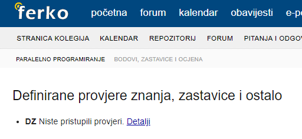

bodNaUvidima Dakle obradila se lekcija koja spada pod ZI? A vježbe za MI se nisu ni održavale zadnja dva tjedna?
iNut Da, 6. cjelina ne ulazi u MI a to se danas radilo.
bodNaUvidima A što ulazi sve u MI?
Ima li tko da mu nisu upisali bodove iz labosa?
Sinusan pa mislim da nikome nisu upisani?
whatTheHel meni su na ferku vidljivi bodovi, odgovarao sam u prvom tjednu predaje
Dragi prijatelj strojnog učenja Gdje to tocno vidis na ferku? Ja tamo nemam niceg koliko vidim
anon00 čim otvoriš ferko vidi se lijevo pod obavijestima, a trebalo bi se i pod bodovima na parpro -> provjere znanja.
Ako vas masu nema upisane bodove ocito asistent jos nije ažurirao, svi ionako znamo koliko smo dobili, whatever
IdeGas Ove godine je čak ubacija i još jednu domaću zadaću te također par cjelina iz drugog ciklusa te mi je sam reka da snimljena predavanja ne prate većinom drugi ciklus 🙂
Predrag mi je Jakobović ko profesor i ko lik, ali ovaj predmetttttttttttttttttttttttttttt bruhhhhhhhhhhhhhhhhh Cmizdrenje gotovo
Jel snimljena predavanja odgovaraju onome sta se radilo ove godine? Vidim da je nova skripta pa nez koliko je promjenio
Rene koliko sam ja išao po novoj skripti i snimljenim predavanjima za sad mi se čini više manje isto - mislim da su veće razlike u 2. ciklusu.
🤡 Hoće. Sam mi je profesor reka na predavanjima kad sam ga pita jer te nove ubačene cjeline nisu snimljene. Za 2. ciklhs govorim.
Mfw skužim koliko ima iz 5. cjeline
Sretan Uskrs kolege
Rene jel mozes poslati link?
predavanja snimljena električnim šiljilom
Je li ima jos netko da mu nije unesena 1.dz na ferko?
Ovako mi stoji kad udem u provjere znanja 
anon00
Mislim da nam je svima tako. Barem je meni. Nisu počeli unostiti bodove.
🤡 ma jebeš labos, di su rezultati međuispita više
Je li onda predaja drugog labosa za maksimalne bodove sljedeći tjedan ili 16.-20. iz one prve obavijesti?
Prof 16.-20. Mislim da je ovaj tjedan za predaju 2. ako si ga napisa ranije i za naknadnu predaju za manje bodova iz prvog labosa.